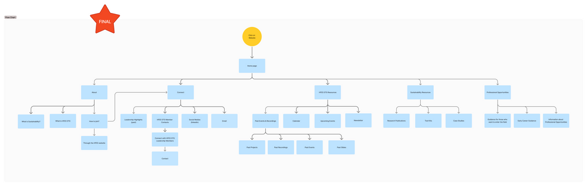
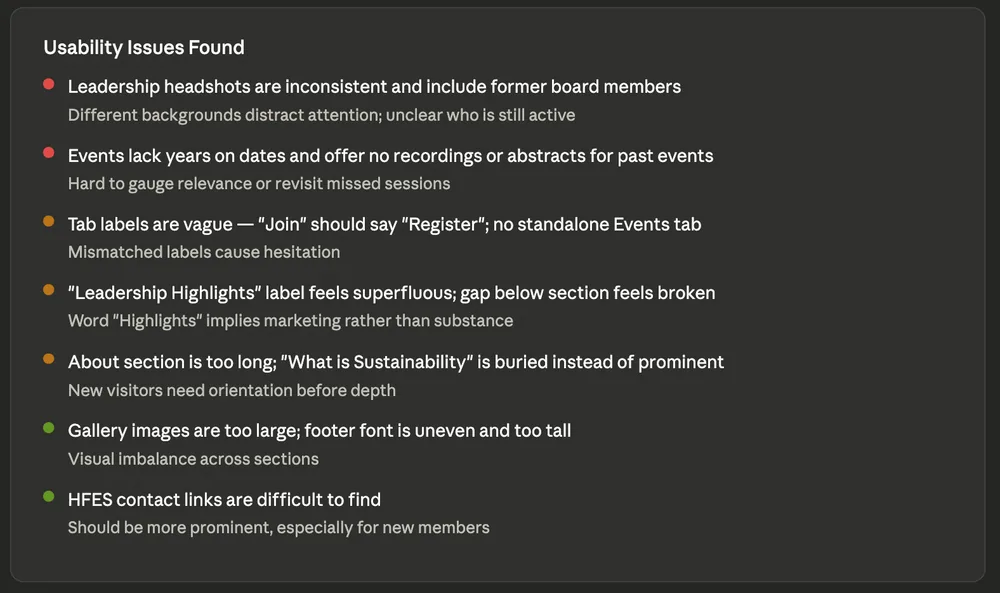
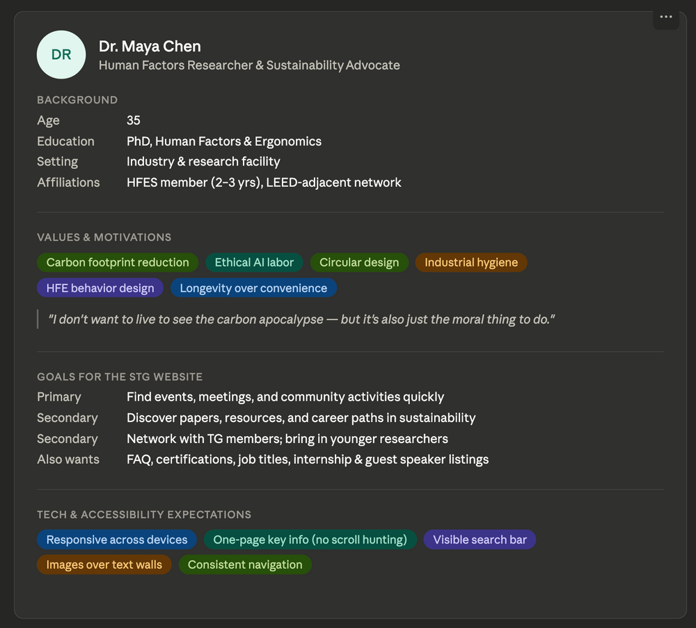

HFES STG.
A website for the Sustainability Technical Group
- Leadership
- Non-profit
- Usability Testing

As Website Lead for the Human Factors and Ergonomics Society’s Sustainability Technical Group, I led the website from research to launch.
200+ members and years of events, recordings and resources, with no central place to find them.
give members one place to learn, connect and stay up to date?
Research, narrowing in
Broad input first, then smaller, deeper studies to make and test decisions.
What we heard

- MembersUpcoming events in one place
- MembersAccess to past recordings
- MembersProfessional opportunities & best practices
- MembersWays to connect with other members
- StakeholdersHighlight past leadership
- StakeholdersA comprehensive resource hub
From insight to decision
Insight
Design decision
Events and recordings were scattered
Event access and an archive of past content
New members had no starting point
An entry point for onboarding and learning
Leadership info lived in many places
One place for members and past leadership
Testing and further research surfaced more needs
Added sustainability and professional resources
Structure
Card sorting with 17 members shaped the information architecture and user flows.


Wireframes
Low-fidelity layouts to settle content and structure before building the MVP in Wix.

Testing
Usability tests and interviews with 5 members found improvements to the MVP and informed a core persona.


ReflectionInterviews usually come earlier, but running them after the MVP still gave insight that shaped the next iterations.
Process
- 01Survey200+ members
- 02Affinity mapDefine user needs
- 03Card sort17 users
- 04IA & flowsContent structure
- 05WireframesLow fidelity
- 06MVPBuilt in Wix
- 07Test5 members
- 08LaunchIterate & expand
Launch
Live and in active use by the group, with the team continuing to update content and design.